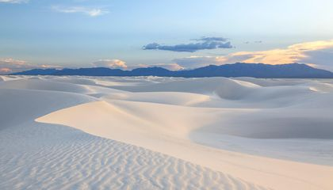

Hi, my name is Pearl.
I am a rising junior at LASA. I enjoy yoga, reading, and calligraphy.
Right now I am reading "Starcarbon" by Ellen Gilchrist.
My favorite TV show is Twin Peaks.
I like to travel. Last weekend I went on a trip to New Mexico, and while I was there, I visited White Sands.

Click here to learn more about White Sands!